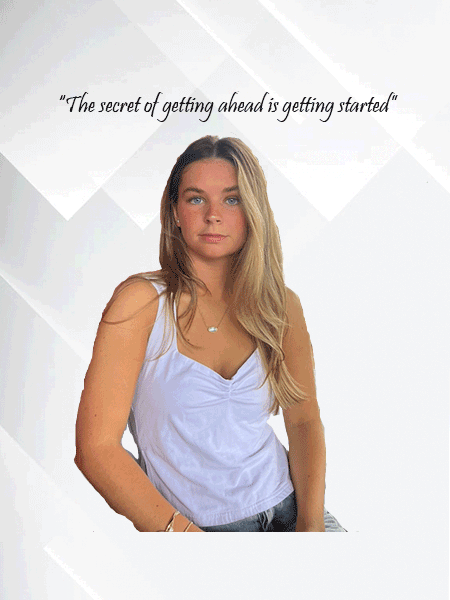

My name is Rylin McGivney, I am currently a Marketing Management major interested in working for a big firm in New York City as a marketing consultant. Some of my skills include organization, sales, time management, and customer interactions.
Skills:
I have 2 sisters one older and one younger who both attended/attend Syracuse University with me. My family is all very close although we don’t see each other too often around campus we spend a lot of time together at home. Me and my younger sister even worked together this past summer which was so fun! I’m very excited to learn all this class has to teach me and cannot wait for the future.
My favorite hobbies include hiking, skiing, and hanging out with my friends. Some of my favorites include Suits for favorite tv shows and It Ends with Us for books.
© 2020